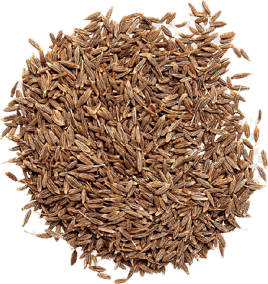

Cinnamomum cassia
Overview
Cassia is a spice derived from the bark of the cassia tree, a species of Cinnamomum native to China and Southeast Asia. It is closely related to true cinnamon but has a stronger, more pungent flavor and aroma. Cassia is commonly used as a cheaper alternative to cinnamon in cooking and baking.
Cultural Overlap
Cassia is widely used in Chinese, Indian, and Southeast Asian cuisines. It is used to flavor savory dishes such as curries, stir-fries, and soups, as well as desserts and baked goods. In Chinese medicine, cassia is believed to have warming properties and is used to treat digestive issues and improve circulation.